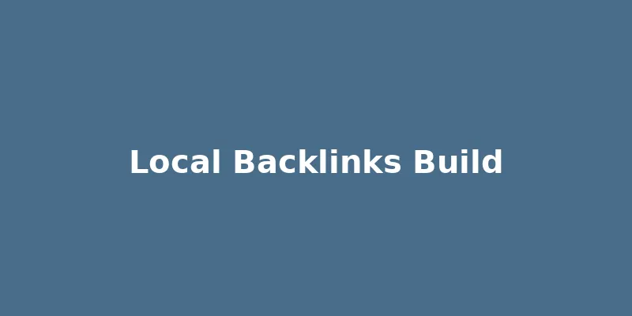

Building Local Backlinks: Strategies for Small Businesses
Published on April 29, 2026

While many aspects of local SEO focus on on-page optimization and Google My Business, the importance of backlinks—links from other websites to yours—cannot be overstated. For small businesses, acquiring high-quality *local* backlinks is a powerful strategy to build online authority, improve search engine rankings, and drive referral traffic from within your community. These links signal to search engines that your business is a trusted and relevant resource in your area.
Building local backlinks differs from general link building in its emphasis on relevance and proximity. Instead of chasing links from large, generic websites, focus on local businesses, organizations, and community hubs. Strategies include partnering with complementary local businesses for cross-promotion, sponsoring local events or charities (and getting a link on their website), offering discounts to local schools or universities, or being featured in local news outlets and blogs.
Another effective tactic is to offer valuable content that local bloggers or news sites would want to link to, such as a "Guide to [Your Town]'s Best [Your Service]" or a local industry report. Actively participate in local online communities and forums, where appropriate, to naturally earn mentions and links. Remember, quality always trumps quantity when it comes to backlinks. By consistently focusing on earning relevant, high-quality local backlinks, small businesses can significantly enhance their domain authority and climb higher in local search results.
Back to Blog